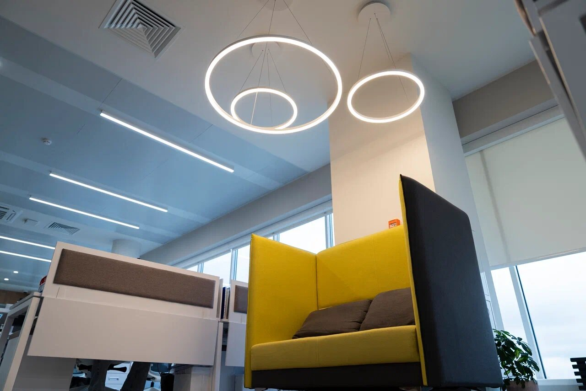

Как выбрать освещение для офиса и рабочего места
Освещение офиса должно помогать работать, ориентироваться в пространстве и пользоваться экранами без лишнего визуального дискомфорта.

Общий свет
Для общего освещения офиса используются:
-
линейные подвесные светильники;
-
накладные модели;
-
встраиваемые светильники;
-
трековые системы;
-
световые линии.
Оборудование следует располагать с учётом рабочих столов, проходов и перегородок, а не только по геометрической сетке потолка.
Освещение рабочих мест
Свет должен равномерно покрывать рабочую поверхность и не создавать резких теней.
Если человек пишет правой рукой, локальный свет желательно располагать слева. Для левшей — наоборот.
Настольная лампа может дополнять потолочное освещение, но не должна быть единственным источником света в тёмном помещении.
Блики на мониторах
Неправильно направленный свет может отражаться в экране.
Чтобы уменьшить блики:
-
не направляйте прожектор прямо на монитор;
-
учитывайте расположение окон;
-
размещайте линейные светильники относительно рабочих столов;
-
выбирайте модели с контролируемым светораспределением;
-
используйте антибликовые элементы при необходимости.
Цветовая температура
Для рабочих помещений часто используют 3000–4000К.
3000К подходит для более спокойных офисов, переговорных и зон общения. 4000К создаёт нейтральное освещение и часто применяется в рабочих пространствах.
Цветовую температуру желательно сохранять одинаковой в пределах одной зоны.
Переговорные комнаты
В переговорной желательно предусмотреть:
-
общий равномерный свет;
-
отдельное освещение стола;
-
мягкий сценарий для презентаций;
-
отсутствие бликов на экране;
-
возможность регулировки яркости.
Подвесной линейный светильник может одновременно освещать стол и визуально выделять переговорную зону.
Зоны отдыха и общения
В кухне, холле или зоне отдыха можно использовать более мягкий свет, подвесные и настенные модели.
Такое зонирование помогает визуально отделить рабочие места от неформальных пространств.
Управление освещением
Разделите офис на самостоятельные группы включения:
-
рабочая зона;
-
переговорная;
-
проходы;
-
ресепшен;
-
кухня;
-
зоны отдыха.
Это позволяет не освещать всё помещение одновременно и адаптировать свет под разные ситуации.
Краткий вывод
Хорошее офисное освещение — это не максимальная яркость, а понятное сочетание общего, локального и управляемого света.